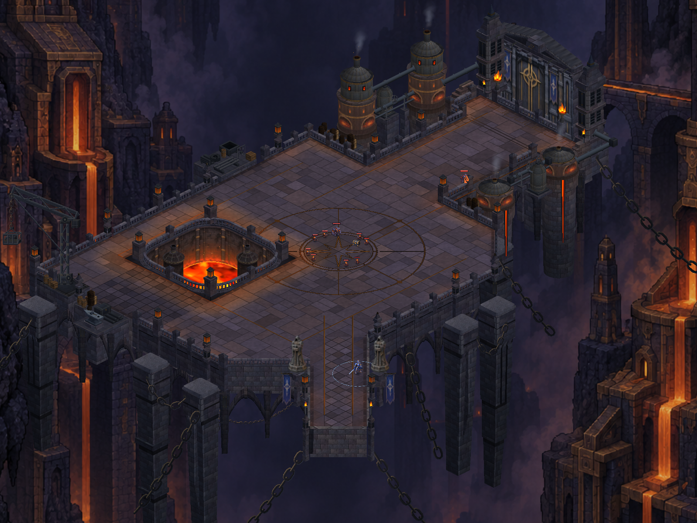
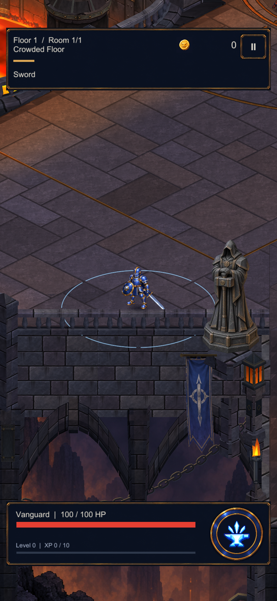
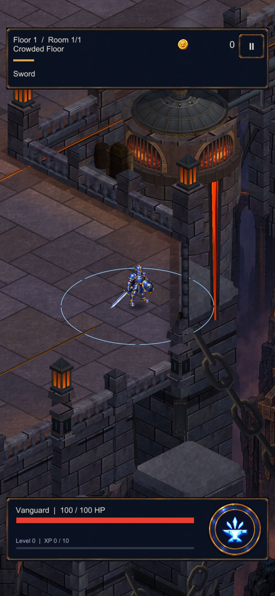
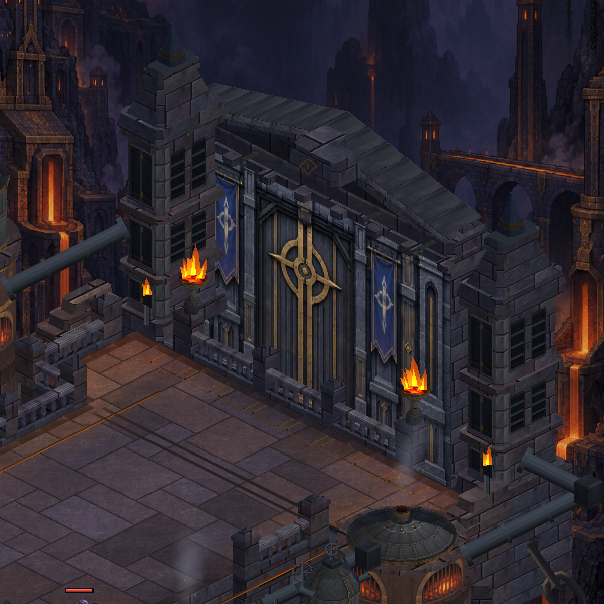
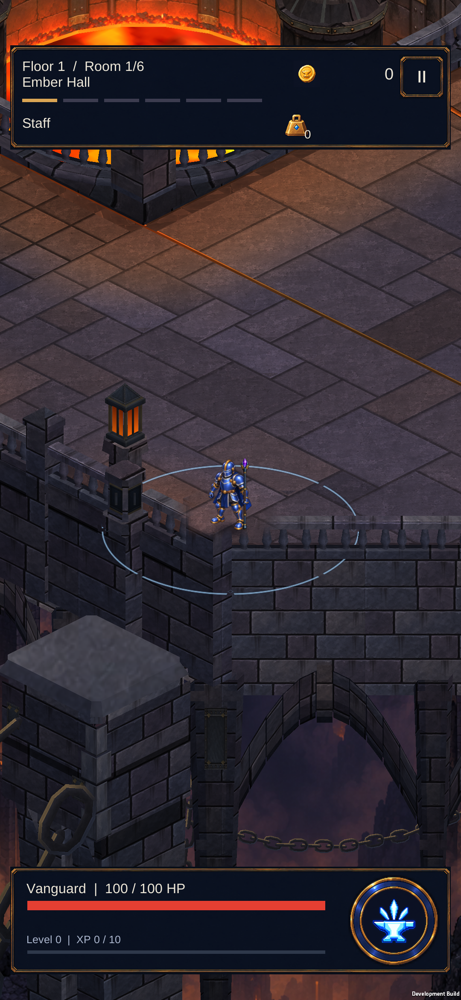
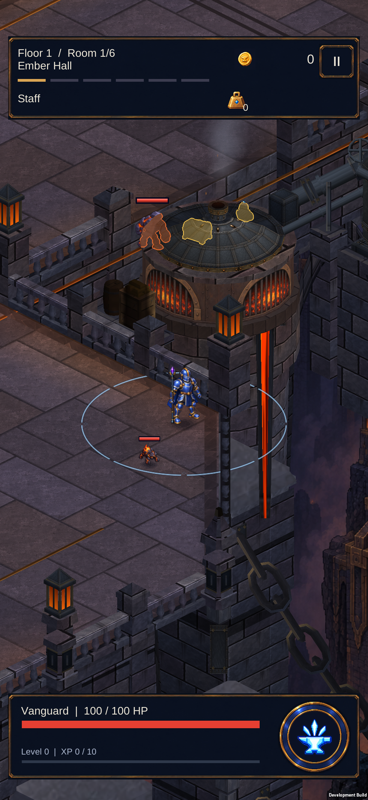
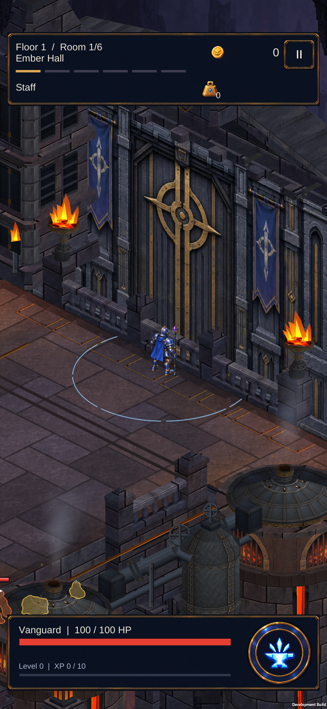
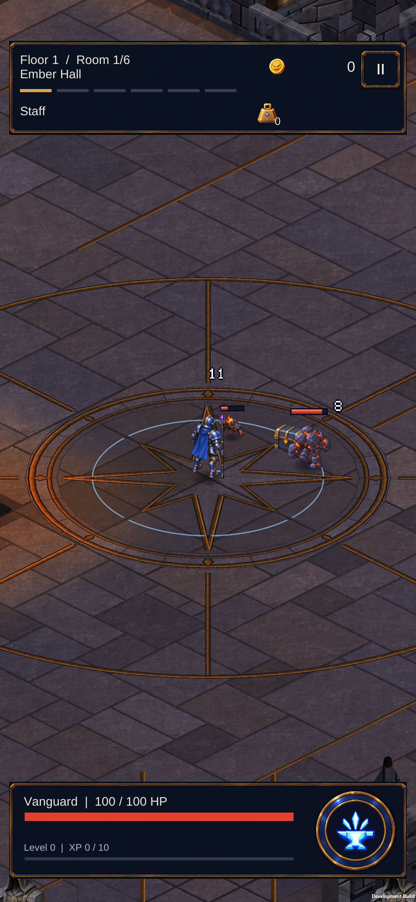

Foundry court — clipped entrance corners
Actual Unity geometry, 8 October 2026. Two six-unit diagonal cuts reshape the court, with matching movement boundaries, balustrades, coping and lower arches. Side terraces frame the gate landing. The playable floor remains on one plane.

New silhouette — identical overview camera
Actual traversal to the southwest corner, beside the bridge keeper
Actual traversal to the southeast corner; the boiler discharge is visible beyond the cut
Raised side shoulders outside the walking lane; flush bands mark the wider gate landing Direction reference — concept illustration, not an in-game screenshot
Direction reference — concept illustration, not an in-game screenshot18 region renderers / 90,080 vertices. This improves the playable silhouette; the northern outline, true raised walkable terrace, finer paving scale and workshop composition still differ from the concept.

S23 — southwest boundary and diagonal balustrade
S23 — southeast boundary beside the boiler discharge
S23 — gate lane remains reachable; side shoulders partly outside the portrait view
S23 — ordinary Staff combat after removing the diagnostic flagInstalled and device reviewed. All tests passed; persistent profile and original development settings preserved.